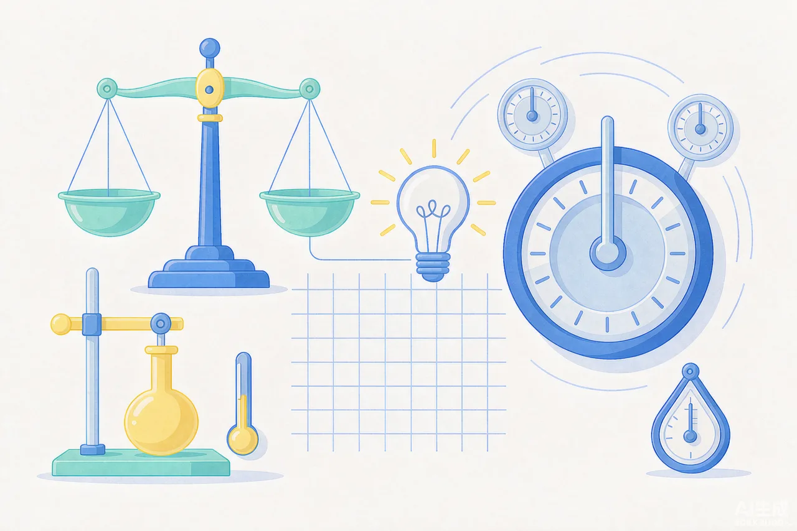

实验设计
阐述自变量操纵、因变量观测与额外变量控制的原则，并比较组间设计与组内设计的适用性。例如研究背景音乐对阅读速度的影响时，需考虑读者的原有水平与音乐类型；随机分配与匹配可平衡被试差异，双盲程序则有助于排除实验者期望造成的偏差，从而提高内部效度。
基础心理学 · DISCIPLINE
Experimental Psychology
以实验方法揭示心理规律
实验心理学是以实验方法研究心理与行为规律的基础分支，核心在于通过操纵、控制与测量来揭示变量间的因果关系。研究者设定自变量、观测因变量，并设法排除额外变量的干扰，遵循随机化与组间、组内设计等原则。例如，要考察睡眠时长对反应时的影响，就需要系统改变睡眠条件、控制练习效应，并对结果作统计检验。该学科发展出心理物理学、反应时法与信号检测论等经典技术，为认知、社会、发展等分支提供方法支撑。掌握其逻辑，有助于我们在日常工作与学习中辨别相关与因果，更审慎地评估各种所谓“效果”的证据。

这个分支主要研究什么
阐述自变量操纵、因变量观测与额外变量控制的原则，并比较组间设计与组内设计的适用性。例如研究背景音乐对阅读速度的影响时，需考虑读者的原有水平与音乐类型；随机分配与匹配可平衡被试差异，双盲程序则有助于排除实验者期望造成的偏差，从而提高内部效度。
研究刺激的物理量与主观感觉量之间的关系，介绍最小变化法、恒定刺激法等阈限测量方法。费希纳定律提出感觉量与刺激量的对数关系，史蒂文斯定律则给出幂函数形式。经典实验如测量刚刚能察觉的光点亮度差异，说明心理量可以被间接量化。
以反应潜伏期作为指标推断内部心理加工过程，介绍减法法与加法法的逻辑。唐德斯用减法法分离不同加工阶段，斯特恩伯格的记忆扫描实验则以加法法估计项目检索速度。反应时法广泛应用于注意、记忆与决策研究，但需权衡速度与准确性。
区分个体的感受性与反应偏向，以击中率与虚报率计算辨别力指标与判定标准。例如在再认记忆测验中，一个人可能因为倾向猜测而击中率虚高；信号检测论能分离这种偏向与真实辨别能力，因此在知觉与记忆研究中优于简单的正确率指标。
分析内部效度与外部效度的含义及威胁因素，讨论抽样偏差、被试变量与实验者效应等误差来源。例如样本若仅来自大学生群体，结论的推广就受限；通过随机抽样、标准化指导语与盲法可减小误差，而重复实验则检验结果的可靠性。
这一分支能带来什么
学习实验心理学能帮助你理解自变量、控制组与随机分配的意义，从而在面对“某方法有效”的说法时主动追问：是否有对照、是否排除了其他解释、样本是否有代表性。这种基于证据的思考方式可用于评估学习技巧、产品宣传与公共政策，减少被相关关系误导的可能。
一项奠定了这个领域的研究
1966年，索尔·斯特恩伯格开展了一系列短时记忆扫描实验。他让被试先记住一组数字，随后判断某个探测数字是否在这组数字中，并记录反应时。结果显示，反应时随记忆集大小的增加而线性上升，说明被试对记忆集进行了逐项扫描，而非直接并行提取；同时，肯定与否定反应时变化的比较支持了穷尽式扫描的假设。这一研究以反应时为窗口推断不可观察的内部加工过程，成为加法法的经典范例，对记忆理论与方法学都产生了持久影响。
还没定论的问题，往往最值得追问
实验心理学常面临严格控制与真实情境之间的张力。实验室中得到的效应能否推广到日常生活，取决于样本、任务与生态效度。近年可重复性研究进一步提示，效应量估计可能偏大，促使学界采用更大样本与多实验室合作验证。
以显著性检验为核心的统计惯例受到越来越多反思。批评者指出，显著性水平并不能直接说明效应大小或结论真实性，过度依赖可能导致误判。当前趋势是同时报告效应量与置信区间，并强调理论预测与数据开放的透明度。
把概念带回日常观察
用手机计时器做一个简单练习：看到红色就立即停止计时，重复五次取平均值；随后在有人说话的环境中再做五次，比较两次平均反应时的差别。也可以让朋友在旁轻声报数，观察干扰是否拖慢反应。由此体会注意资源被分散时的表现变化。仅作自我观察，不构成诊断。
怎么研究，用在哪里
进入这个分支的术语入口
与这一领域密切相关的名字
将自然科学的实验方法引入心理研究，建立首个心理学实验室，奠定实验心理学的方法基础。
创立心理物理学并提出感觉量与刺激量的对数关系，为量化身心关系提供早期方法。
以无意义音节开展记忆实验，发现遗忘曲线，开创对高级心理过程的实验研究。